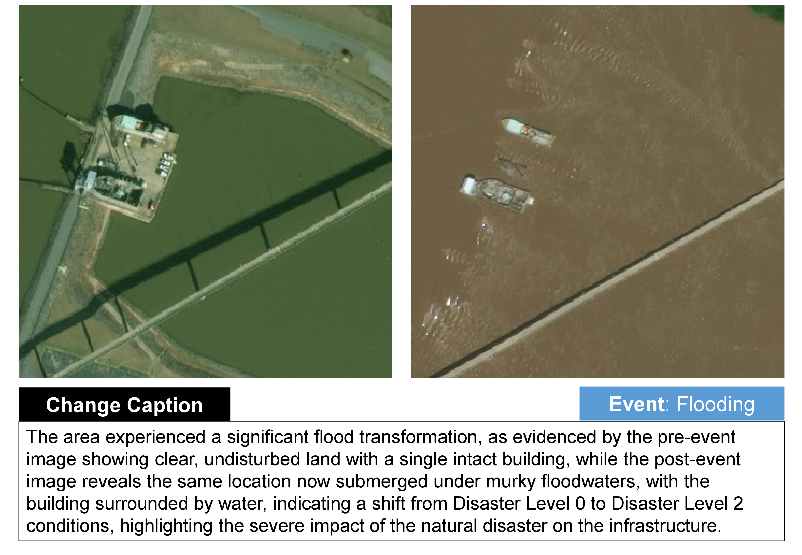
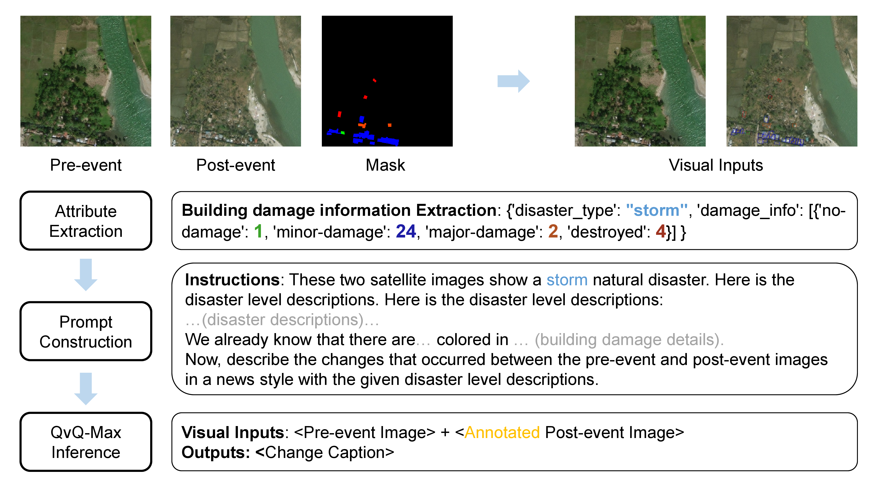
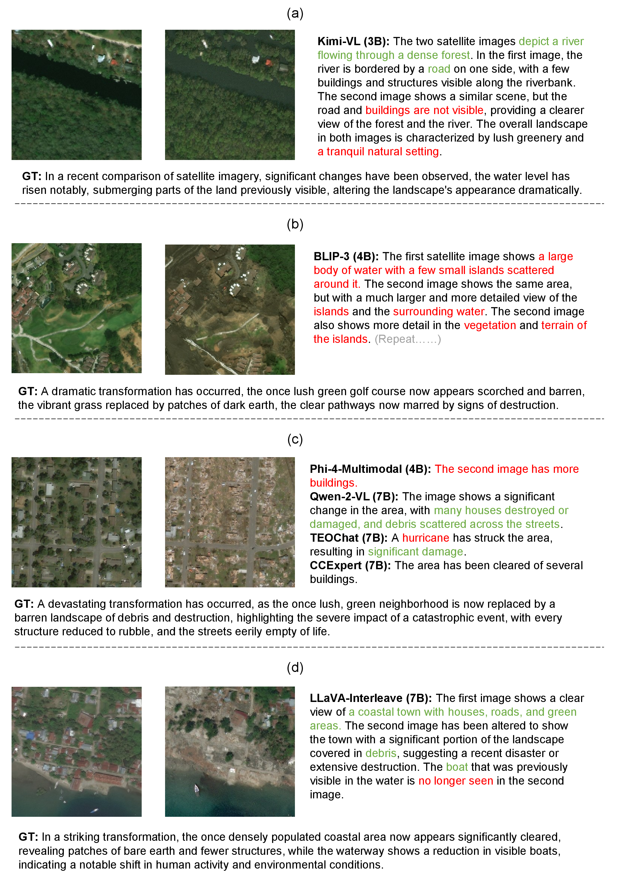
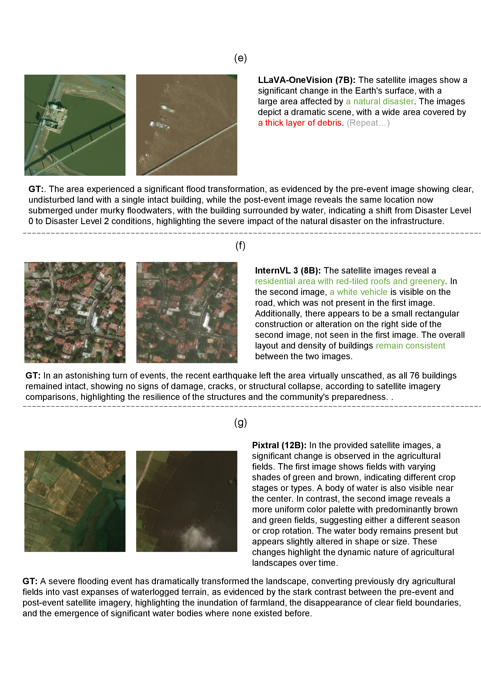
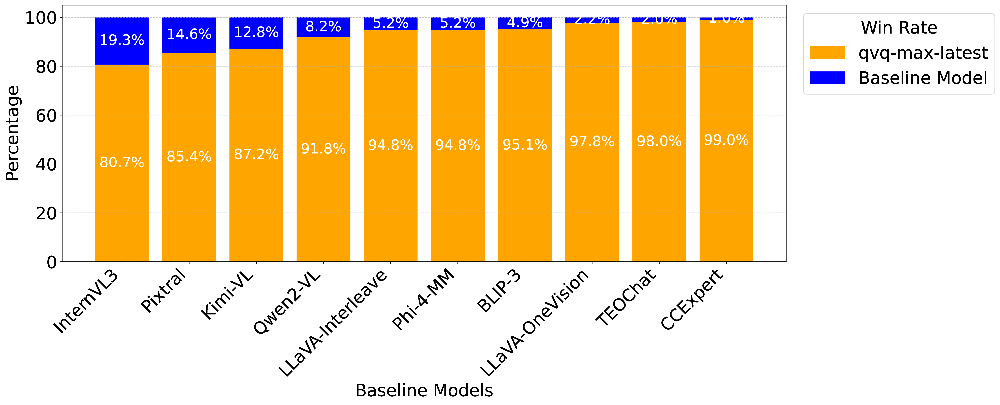

An example of RSCC.

Construction pipeline.
Model Performance Comparison
| Model | N-Gram | Contextual | Avg_L | ||
|---|---|---|---|---|---|
| (#Activate Params) | ROUGE(%)↑ | METEOR(%)↑ | BERT(%)↑ | ST5-SCS(%)↑ | (#Words) |
| BLIP-3 (3B) | 4.53 | 10.85 | 98.83 | 44.05 | *456 |
| + Textual Prompt | 10.07 (+5.54↑) | 20.69 (+9.84↑) | 98.95 (+0.12↑) | 63.67 (+19.62↑) | *302 |
| + Visual Prompt | 8.45 (-1.62↓) | 19.18 (-1.51↓) | 99.01 (+0.06↑) | 68.34 (+4.67↑) | *354 |
| Kimi-VL (3B) | 12.47 | 16.95 | 98.83 | 51.35 | 87 |
| + Textual Prompt | 16.83 (+4.36↑) | 25.47 (+8.52↑) | 99.22 (+0.39↑) | 70.75 (+19.40↑) | 108 |
| + Visual Prompt | 16.83 (+0.00) | 25.39 (-0.08↓) | 99.30 (+0.08↑) | 69.97 (-0.78↓) | 109 |
| Phi-4-Multimodal (4B) | 4.09 | 1.45 | 98.60 | 34.55 | 7 |
| + Textual Prompt | 17.08 (+13.00↑) | 19.70 (+18.25↑) | 98.93 (+0.33↑) | 67.62 (+33.07↑) | 75 |
| + Visual Prompt | 17.05 (-0.03↓) | 19.09 (-0.61↓) | 98.90 (-0.03↓) | 66.69 (-0.93↓) | 70 |
| Qwen2-VL (7B) | 11.02 | 9.95 | 99.11 | 45.55 | 42 |
| + Textual Prompt | 19.04 (+8.02↑) | 25.20 (+15.25↑) | 99.01 (-0.10↓) | 72.65 (+27.10↑) | 84 |
| + Visual Prompt | 18.43 (-0.61↓) | 25.03 (-0.17↓) | 99.03 (+0.02↑) | 72.89 (+0.24↑) | 88 |
| LLaVA-NeXT-Interleave (8B) | 12.51 | 13.29 | 99.11 | 46.99 | 57 |
| + Textual Prompt | 16.09 (+3.58↑) | 20.73 (+7.44↑) | 99.22 (+0.11↑) | 62.60 (+15.61↑) | 75 |
| + Visual Prompt | 15.76 (-0.33↓) | 21.17 (+0.44↑) | 99.24 (+0.02↑) | 65.75 (+3.15↑) | 88 |
| LLaVA-OneVision (8B) | 8.40 | 10.97 | 98.64 | 46.15 | *221 |
| + Textual Prompt | 11.15 (+2.75↑) | 19.09 (+8.12↑) | 98.85 (+0.21↑) | 70.08 (+23.93↑) | *285 |
| + Visual Prompt | 10.68 (-0.47↓) | 18.27 (-0.82↓) | 98.79 (-0.06↓) | 69.34 (-0.74↓) | *290 |
| InternVL 3 (8B) | 12.76 | 15.77 | 99.31 | 51.84 | 64 |
| + Textual Prompt | 19.81 (+7.05↑) | 28.51 (+12.74↑) | 99.55 (+0.24↑) | 78.57 (+26.73↑) | 81 |
| + Visual Prompt | 19.70 (-0.11↓) | 28.46 (-0.05↓) | 99.51 (-0.04↓) | 79.18 (+0.61↑) | 84 |
| Pixtral (12B) | 12.34 | 15.94 | 99.34 | 49.36 | 70 |
| + Textual Prompt | 19.87 (+7.53↑) | 29.01 (+13.07↑) | 99.51 (+0.17↑) | 79.07 (+29.71↑) | 97 |
| + Visual Prompt | 19.03 (-0.84↓) | 28.44 (-0.57↓) | 99.52 (+0.01↑) | 78.71 (-0.36↓) | 102 |
| CCExpert (7B) | 7.61 | 4.32 | 99.17 | 40.81 | 12 |
| + Textual Prompt | 8.71 (+1.10↑) | 5.35 (+1.03↑) | 99.23 (+0.06↑) | 47.13 (+6.32↑) | 14 |
| + Visual Prompt | 8.84 (+0.13↑) | 5.41 (+0.06↑) | 99.23 (+0.00) | 46.58 (-0.55↓) | 14 |
| TEOChat (7B) | 7.86 | 5.77 | 98.99 | 52.64 | 15 |
| + Textual Prompt | 11.81 (+3.95↑) | 10.24 (+4.47↑) | 99.12 (+0.13↑) | 61.73 (+9.09↑) | 22 |
| + Visual Prompt | 11.55 (-0.26↓) | 10.04 (-0.20↓) | 99.09 (-0.03↓) | 62.53 (+0.80↑) | 22 |

Visualization of qualitative results. Critical descriptions are colored in green while incorrect and hallucinated sentences/words are red.

Visualization of qualitative results. Critical descriptions are colored in green while incorrect and hallucinated sentences/words are red.

Win-rate from QvQ-Max (ground truth) to all baseline models on RSCC subset.